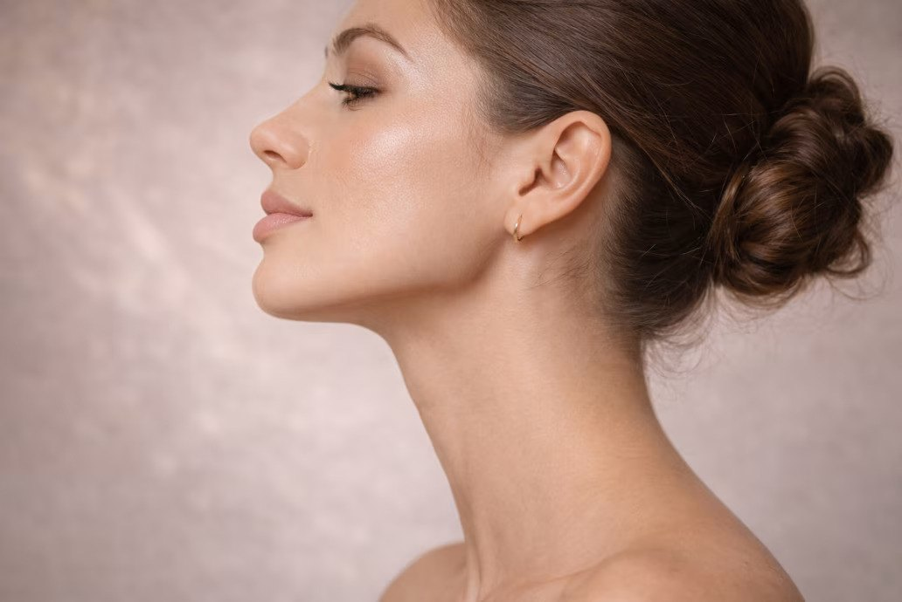

Contour & Co. Aesthetics, Summerville
Most people cannot point to the one feature they would change. They just know their face feels slightly out of proportion in photographs: the profile that seems off, the chin that disappears, the cheeks that no longer hold light the way they used to. Facial balancing is the art of fixing the relationships between features, not the features themselves.
At Contour & Co. Aesthetics, a balancing plan looks at your face the way you actually see it: whole, moving, and unmistakably yours. Then we support what is missing, in the order your face needs it, with the lightest hand that will do the job.
1203 Old Trolley Rd Ste B, Summerville, SC 29485
About the Treatment
Facial balancing is a planning approach, not a product. Instead of asking which single feature to fill, we ask where your face has lost support, and how each area affects the ones around it. Small, precise amounts of dermal filler are placed where structure is missing, most often across the cheeks, chin, jawline and lips together, so that no single feature has to work too hard or stand out too much.
Order matters more than amount. A chin that sits slightly back can make a healthy nose look dominant and well-shaped lips look small. Support the chin first, and the nose and lips often need nothing at all. Cheeks that have flattened with time can make the under-eyes look tired and the lower face heavy; restore the cheek, and the whole mid-face lifts visually. This is why two faces can use the same total amount of filler and get completely different results: one was planned as a whole, the other was filled feature by feature.
At your consultation we study your face from the front and in profile, at rest and in expression, and map exactly where support would restore proportion. Sometimes the honest map is a short one. Sometimes it suggests staging treatment across two visits. Either way, you see the whole plan before anything begins. You can read more about the philosophy behind our facial balancing and dermal filler treatments on our main website.
Benefits
Clients from Summerville, Nexton, Cane Bay and across the Lowcountry rarely ask us for a specific feature. They ask for the feeling of their face making sense again. A balanced plan tends to deliver that in a few recognizable ways.
Balancing often pairs naturally with Botox and wrinkle relaxers, which soften the lines that movement adds on top of structure.
We never quote a single syringe for a single feature without looking at the whole picture. Your plan is drawn on your face, in the mirror, with you, before any product is discussed.
Anyone can add volume. Knowing where a quarter syringe restores harmony, and where to stop entirely, is the actual craft, and it is the standard our studio is known for.
A balanced face divides naturally into thirds, forehead to brow, brow to nose, nose to chin, that feel roughly equal, with a profile where the forehead, nose, lips and chin relate in a gentle line. Almost no real face matches the textbook exactly, and it should not have to. Your assessment is about finding where your proportions drift furthest from your own best version, not from a template.
We look at how light travels across your cheeks, whether your chin supports your lips, how your jawline frames your neck, and how all of it moves when you smile and speak. Then we rank the changes by impact: the smallest intervention that creates the biggest harmony goes first. Many clients are relieved to learn their plan is shorter than they feared. A few learn that one area they never considered, often the chin, is quietly responsible for most of what bothers them.
Is It Right for You?
Facial balancing suits people who feel their face is slightly out of proportion but cannot name a single feature to blame. It suits profiles that feel weak or heavy, cheeks that have flattened through their thirties and forties, chins that sit back or look short, jawlines losing their edge, and faces where one feature, often the nose or the lips, seems to dominate the rest.
It also suits people who have had filler before and feel it never quite looked right. Very often the product was fine; it was simply placed without a whole-face plan, and rebalancing what exists, occasionally dissolving a little first, brings the face back into harmony.
What it asks of you is patience with process. The best balancing is sometimes staged, and always begins with an honest assessment, including telling you if a concern is better served by a different treatment, or by none at all.

Your Visit
We begin with the map. Your consultation is a full facial assessment, front and profile, with photographs if you are comfortable. We agree together on what to treat, in what order, and what to deliberately leave alone.
Treatment is staged, never rushed. Structural areas usually come first: cheeks, chin, jawline. Finer work, like lips, often follows once the frame is set, sometimes at a second visit two weeks later, so every stage settles before the next is judged.
Comfort is managed throughout. Topical numbing, fillers with built-in lidocaine, and a pace that lets you check the mirror as we go. Most balancing appointments run between 45 and 90 minutes depending on the plan.
Before you leave, you will have a written sense of your plan, what each stage achieved, and when we suggest reviewing it. Many clients fold their maintenance into their regular appointments at our Summerville med spa once or twice a year.
Why Contour & Co.
Contour & Co. Aesthetics exists because aesthetic medicine had started producing the same face on everyone. Our studio on Old Trolley Road takes the opposite approach: small, personal, and devoted to results that read as you on your best day. Facial balancing is the purest expression of that philosophy, because it cannot be copied from a photograph. It has to be designed on the face in the chair.
Clients visit us from Summerville, Nexton, Cane Bay, Knightsville and the wider Charleston area for exactly that restraint. Whether your plan involves two syringes or five, one visit or three, it will be proportioned to your bone structure, your age and your taste, and we will talk you out of anything more.

Facial balancing often combines several treatments into one plan. Explore the full range on the main Contour & Co. website:
The foundation of balancing: precise structural support for cheeks, chin, jawline and lips.
Explore Dermal FillersSoft definition and shape, planned in proportion to the rest of your face, never in isolation.
Explore Lip FillerSoften the lines movement adds, so balanced structure is not undermined by expression lines.
Explore Botox in SummervilleRebuild your own collagen gradually for firmness that develops naturally over time.
Explore SculptraBalanced features deserve healthy light reflection: deep-clean, hydrate and brighten the skin itself.
Explore Skin TreatmentsRefine texture and tone so the surface of the skin matches the harmony underneath it.
Explore Laser TreatmentsOur studio sits on Old Trolley Road in the heart of Summerville, an easy drive from neighborhoods and communities across Dorchester County and the greater Charleston area. Clients visit us from:
Wherever you are coming from, plan to arrive a few minutes early, settle in, and let the appointment feel like a pause in your day rather than another errand in it.
Straight answers to the questions we hear most in our Summerville studio.
Facial balancing is a planning approach, not a single product. Instead of treating one feature in isolation, we assess your whole face, front and profile, and use small, precise amounts of dermal filler, and sometimes wrinkle relaxers, where support is missing: often the cheeks, chin, jawline and lips together. The goal is proportion. Each area receives only what it needs so the whole face reads as harmonious, rested and natural.
Standard filler appointments usually target one area: lips, or cheeks, or one line that bothers you. Facial balancing starts a step earlier, with the relationships between features. A chin that sits slightly back can make a nose look stronger and lips look smaller than they are. Supporting the chin first can balance all three without touching them. It is the difference between decorating one room and planning the whole house.
It depends on the areas treated and the products used. Filler in quieter, structural areas such as the cheeks, chin and jawline commonly lasts 12 to 24 months, while lips, which move constantly, are usually refreshed every 6 to 12 months. Because a balancing plan spreads small amounts across several areas, most clients maintain their result with one modest visit a year rather than starting over.
No, and that is precisely the point of it. Balancing works with your own bone structure and proportions; it does not redraw them. The most common feedback our clients hear is that they look rested, well, or somehow better in photographs, without anyone being able to name a procedure. If a plan would change your face beyond what still looks like you, we will say so and suggest less.
Every face is different, which is why the assessment comes first. As a general guide, a first balancing plan often uses somewhere between two and five syringes spread across several areas, sometimes staged over two visits so results settle before more is added. A syringe is about a fifth of a teaspoon, and spread across a whole face that goes a long way. You will always know the full plan and cost before anything is opened.
Most clients return to normal life the same day. Expect some swelling for two to four days, most noticeable in the lips if they are treated, and the possibility of small bruises that makeup can usually cover after the first day. Your final result settles at about two weeks, which is why we suggest planning treatment at least two weeks before photographs, weddings or big events.
You can book online through the Contour & Co. Aesthetics website or call us at +1 843-998-3030. You will find us at 1203 Old Trolley Rd Ste B in Summerville. The consultation is a conversation and an assessment, never a commitment: we map your proportions together, explain what we would treat and in what order, and you decide if and when you would like to begin.
Bring us the photographs where your face does not quite feel like yours. We will show you, in the mirror, exactly where proportion can be restored, and build the smallest plan that gets you there.